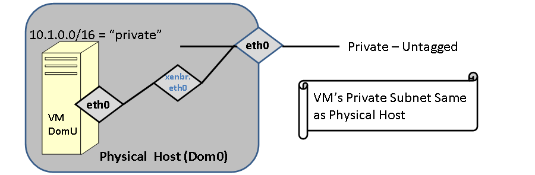
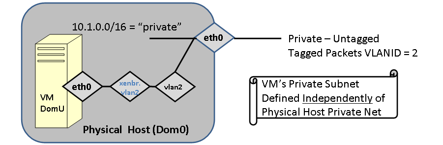
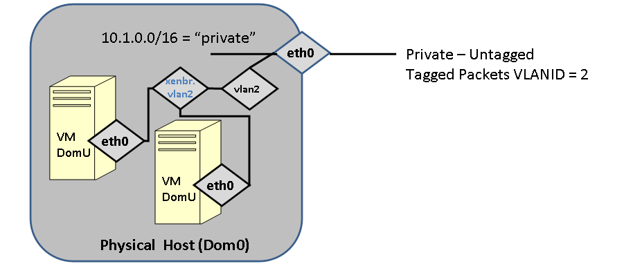
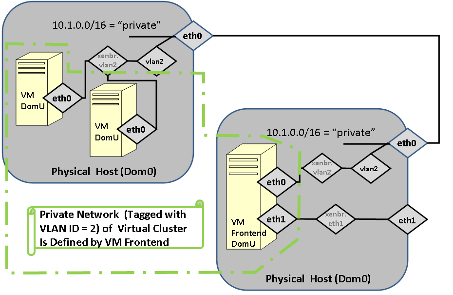

Xen Users Guide: 
| ||
|---|---|---|
| Prev | Chapter 3. Using the Xen Roll | Next |
In order to support XEN Virtual machines, it is necessary to have a particular network configuration on the hosting servers. In particular bridges must be set up to provide Virtual Machine with network connectivity. In this section, we describe the various kinds of bridging scenarios for virtual machines and how to set them up. For these examples, the physical machine will be called vm-container-0-0.
When a VM is bridged to the physical device, it must be assigned in the same subnet as the physical device with a compatible IP address (this case is exactly what is described in Physical Frontend with Virtual Compute Nodes ).

FIGURE: The Virtual machine is bridged to eth0. In this case eth0 of the VM is in the same subnet (with a compatible IP) address. The VM and the container will be able to ping each other. This was the only configuration supported in Rocks 5.0
The following example shows this most basic of bridging scenarios. The guest (compute-0-0-1) and the container (vm-container-0-0) are in the same IP subnet and will be able to ping each other.
[root@tranquil images]# rocks list host interface vm-container-0-0 compute-0-0-1 HOST SUBNET IFACE MAC IP NETMASK MODULE NAME VLAN compute-0-0-1: private eth0 00:16:3e:00:00:11 172.16.254.192 255.255.255.0 xennet compute-0-0-1 ------ vm-container-0-0: private eth0 00:09:6b:89:39:68 172.16.254.238 255.255.255.0 e1000 vm-container-0-0 ------ |
In this scenario, The guest (hosted-vm-0-0-0) and the host (vm-container-0-0) are not in the same logical network (this is the scenario described in Provisioning a Virtual Cluster).

FIGURE: Guest VM is bridged through a logical VLAN device.
[root@rocks ~]# rocks list host interface vm-container-0-0 hosted-vm-0-0-0 HOST SUBNET IFACE MAC IP NETMASK MODULE NAME VLAN hosted-vm-0-0-0: ------- eth0 00:16:3e:00:00:05 -------------- --------- ------ hosted-vm-0-0-0 2 vm-container-0-0: private eth0 00:0e:0c:5d:7e:5e 10.255.255.254 255.0.0.0 e1000 vm-container-0-0 ------ vm-container-0-0: private vlan2 ----------------- -------------- --------- ------ ---------------- 2 |
In the above configuration, Logical VLAN device vlan2 (with tag=2) will be on the physical network eth0 on vm-container-0-0. The hosted-vm-0-0-0 (a Rocks "appliance" that simply holds a generic VM guest) will have have its interface on VLAN=2. The physical machine must have a Logical vlan device with the same tag.
Below we give a more complicated configuration and walk through exactly what is bridged where.
[root@rocks ~]# rocks list host interface vm-container-0-0 SUBNET IFACE MAC IP NETMASK MODULE NAME VLAN private eth0 00:0e:0c:5d:7e:5e 10.255.255.254 255.0.0.0 e1000 vm-container-0-0 ------ net10 eth1 00:10:18:31:74:84 192.168.1.10 255.255.255.0 tg3 vm-net10-0-0 ------ net10 vlan100 ----------------- -------------- ------------- ------ ---------------- 100 private vlan2 ----------------- -------------- ------------- ------ ---------------- 2 [root@rocks ~]# rocks list host interface hosted-vm-0-0-0 SUBNET IFACE MAC IP NETMASK MODULE NAME VLAN ------ eth0 00:16:3e:00:00:05 -- ------- ------ hosted-vm-0-0-0 2 ------ eth1 00:16:3e:00:00:80 -- ------- ------ --------------- 100 |
In the above scenario, if hosted-vm-0-0-0 (Xen guest, DomU) were to be booted on physical host vm-container-0-0 (Dom0), the packets from the guest on eth0 will be tagged with VLAN=2, and eth1 with VLAN=100. The host machine must have Logical VLAN interfaces called "vlan*.". To make the proper bridge configuration, Rocks will match the VLANs of the guest interfaces to the VLANs on the host. On the host, logical interface vlan2 is labeled as being on the private network (eth0) and logical vlan100 is labeled as being on the net10 network (eth1).

FIGURE: Multiple VMs communicating on a Logical VLAN interface.

FIGURE: Fully Virtualized cluster, including a virtual frontend.